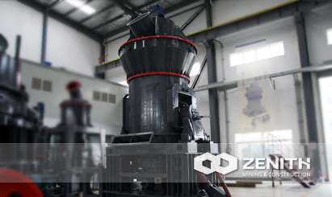
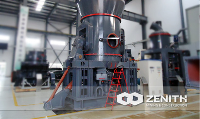
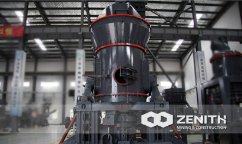
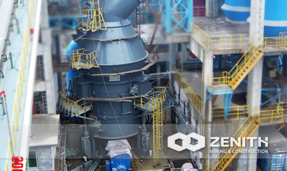

- 
- 
- 
- 
LM Vertical Grinding Mill
LM series vertical grinding mill, which is developed and launched by Zenith, sets medium crushing, drying, grinding, classifying and other functions as a whole, being the ideal equipment in the grinding industry. For those mining investors who want to get a cheap price and cost of mining grinder, Zenith's LM vertical grinding mill can meet their particular requirements.
Application of LM Vertical Grinding Mill
LM vertical grinding mill is mainly applied in the grinding process of metallurgy, building materials, chemical, mining and other mineral industries, and suitable for grinding quartz, feldspar, rare earth, marble, ceramic, bauxite, manganese ore, iron ore, copper ore, red iron oxide, zircon sand, slag, cement clinker, activated carbon, dolomite, iron oxide yellow, chemical fertilizer, compound fertilizer, fly ash, bituminous coal, lignite, chrome oxide green, gold, red mud, clay, kaolin, coke, porcelain clay,purple stone, basalt, gypsum, graphite, silicon carbide, thermal insulation materials and other non-flammable burst materials whose Mohs hardness are below 9.3.
LM Vertical Grinding Mill Benefits and advantages
- Low running costs.
It adopts the technology that vertical roller grind material directly on the disc, with low energy consumption; for the roller is not contact with the disc directly in the work, and the roller and liner are made by quality materials, it is of less wear and long life.
- Simple and reliable operation.
Its automatic control system can reach remote control, which is easy to operate; there is the device to prevent roller sleeve contact with disc liner directly, and avoid the destructive impact and severe vibration; we can turn the rotating arm by repairing fuel tank, replace the roller and liner are more convenient, which can reduce the downtime.
- Energy conservation and environmental protection.
It features small vibration, low noise, and sealing device as a whole, and the system also works with no pressure and dust spills.
The tacnology data
| Model | LM130K | LM150K | LM170K | LM190K | LM220K | LM130M | LM150M | LM170M | LM190M | LM220M | LM130N | LM150N | LM170N | LM190N | LM220N | |
|---|---|---|---|---|---|---|---|---|---|---|---|---|---|---|---|---|
| Wheel diameter(mm) | 1300 | 1500 | 1700 | 1900 | 2200 | 1300 | 1500 | 1700 | 1900 | 2200 | 1300 | 1500 | 1700 | 1900 | 2200 | |
| Output (th) | 10-30 | 13-40 | 18-57 | 23-72 | 36-110 | 10-15 | 16-22 | 20-28 | 26-35 | 35-50 | 5-14 | 7-20 | 8-27 | 9-30 | 18-55 | |
| Finish fineness | µm | 170-45 | 170-45 | 170-45 | 170-45 | 170-45 | 170-45 | 170-45 | 170-45 | 170-45 | 170-45 | |||||
| Mesh | 80-325 | 80-325 | 80-325 | 80-325 | 80-325 | 80-325 | 80-325 | 80-325 | 80-325 | 80-325 | ||||||
| Coal powder fineness (R0.08) | 5-20% | 5-20% | 5-20% | 5-20% | 5-20% | |||||||||||
| Coal powder moisture (%) | <1% | <1% | <1% | <1% | <1% | |||||||||||
| End product moisture (%) | ≤1% | ≤1% | ≤1% | ≤1% | ≤1% | ≤1% | ≤1% | ≤1% | ≤% | ≤1% | ||||||
| Grinding material particle size D80 (mm) | <10 | <10 | <10 | <10 | <10 | <10 | <10 | <10 | <10 | <10 | <10 | <10 | <10 | <10 | <10 | |
| Grinding material max feed size(mm) | <38 | <40 | <42 | <45 | <50 | <38 | <40 | <42 | <45 | <50 | <38 | <40 | <42 | <45 | <50 | |
| Moisture of grinding material not to dry (%) | <4% | <4% | <4% | <4% | <4% | <4% | <4% | <4% | <4% | <4% | ||||||
| Matieral moisture of into mill (%) | <15% | <15% | <15% | <15% | <15% | |||||||||||
| Moisture of grinding material need to dry (%) | 4%-15% | 4%-15% | 4%-15% | 4%-15% | 4%-15% | 4%-15% | 4%-15% | 4%-15% | 4%-15% | 4%-15% | ||||||
| Into mill air temperature (℃) | <350 | <350 | <350 | <350 | <350 | <350 | <350 | <350 | <350 | <350 | <350 | <350 | <350 | <350 | <350 | |
| Out of the mill air temperature (℃) | 70-95 | 70-95 | 70-95 | 70-95 | 70-95 | 75-95 | 75-95 | 75-95 | 75-95 | 75-95 | 70-95 | 70-95 | 70-95 | 70-95 | 70-95 | |
| Raw coal hardgrove grindabity index (HGI) | >55 | >55 | >55 | >55 | >55 | |||||||||||
| Main motor power (kw) | 200 | 280 | 400 | 500 | 800 | 185 | 250 | 315 | 400 | 500 | 200 | 280 | 400 | 500 | 800 | |
| Contour dimension | Length (mm) | 5520 | 6550 | 7170 | 7580 | 8080 | 5520 | 6550 | 7170 | 7580 | 8080 | 5520 | 6550 | 7170 | 7580 | 8080 |
| Width (mm) | 2500 | 3070 | 3460 | 3320 | 4660 | 2500 | 3070 | 3460 | 3320 | 6700 | 2500 | 3070 | 3460 | 3320 | 4660 | |
| Height (mm) | 7060 | 7560 | 8300 | 8960 | 9020 | 7060 | 7560 | 8300 | 8960 | 9020 | 7060 | 7560 | 8300 | 8960 | 9020 | |